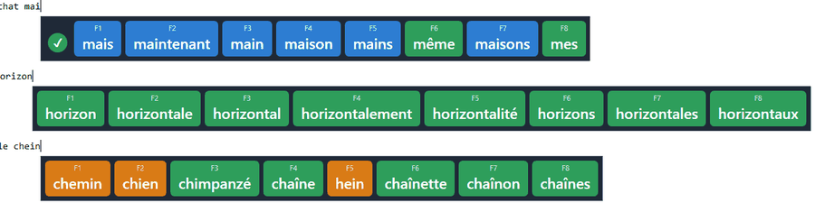
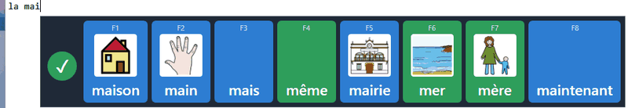

Comment ça marche
Tu écris, Pépite cherche les mots. Toi, tu décides.
La barre de mots
Elle montre jusqu'à 8 mots. Le mot le plus probable est à gauche, sur F1.
Tu continues à taper ? La barre change à chaque lettre.
Après un mot et une espace, Pépite propose déjà le mot suivant.
Quand ton mot est bien écrit, il est toujours dans la barre. Choisir ton propre mot ajoute l'espace (et la majuscule en début de phrase).
Les couleurs
La couleur de la case dit pourquoi Pépite propose ce mot.

- bleu : la suite des lettres que tu as tapées ;
- vert : un mot qui a le même son ;
- orange : un mot avec des lettres inversées ou oubliées.
Alors tu peux écrire comme tu entends : Pépite retrouve souvent le bon mot.
Tu as collé deux mots ? Tu écris je tème
: une case verte propose t'aime
, avec l'apostrophe. Pareil pour jai
→ j'ai
ou lécole
→ l'école
. Pépite regarde les mots d'avant : après le
, c'est plutôt thème
.
Choisir un mot

Pépite écrit le mot entier, puis une espace. Tu tapes une virgule ou un point ? L'espace en trop disparaît.
Les images
Au-dessus d'un mot, une image t'aide à le reconnaître.

Certaines cases restent vides : c'est voulu. Pour des petits mots comme « les », « est » ou « de », une image serait fausse. Une case vide gêne moins qu'une image qui trompe.
Les prénoms et les pays
Pépite connaît beaucoup de prénoms, de pays et de villes. Tape une majuscule au milieu d'une phrase : il propose d'abord des noms.
Les prénoms des grandes personnes (Roger, Gérard…) arrivent aussi, dès quelques lettres.
Au-dessus d'un pays, tu vois son drapeau. « Pierre », le prénom, n'a jamais l'image d'une pierre.
Ton prénom n'est pas proposé ? Ajoute-le à tes mots.
Les accords
Pépite regarde les mots juste avant. Il essaie de proposer le mot bien accordé :
- après « il a », il propose « mangé », pas « manger » ;
- après « les », il propose « journaux », pas « journal ».
Pépite ne regarde que les deux ou trois derniers mots. Il peut se tromper : relis toujours ta phrase.
La ponctuation
- Tape j : la barre propose aussi « j' ». « l' », « d' », « j' », « m' », « c' », « qu' »… sont proposés avec leur apostrophe, sans espace après.
- Après un mot choisi dans la barre, avant ; : ! ?, Pépite met une petite espace, comme dans les livres.
- Après un point, le mot proposé commence par une majuscule.
La voix
Pépite dit le mot que tu viens de choisir. Tu l'entends, tu vérifies.
Il dit aussi chaque mot que tu finis, et toute la phrase quand tu mets un point. Tout cela se règle dans les réglages.
Un clic droit sur un mot de la barre : tu l'écoutes sans l'écrire.
Relire ce que tu corriges
Tu changes une lettre dans un mot, puis tu cliques ailleurs ? Pépite relit le mot corrigé.
Tu quittes la phrase ? Pépite relit toute la phrase.
Faire une pause
Clique sur le biscuit près de l'horloge, puis sur Pause. Le biscuit devient gris. Reprendre remet Pépite en marche.
Les mots de passe
Dans un champ de mot de passe, Pépite ne propose rien, ne lit rien et ne dit rien. C'est fait exprès.
Quand Pépite ne sait pas si un champ est sûr, il se tait aussi.